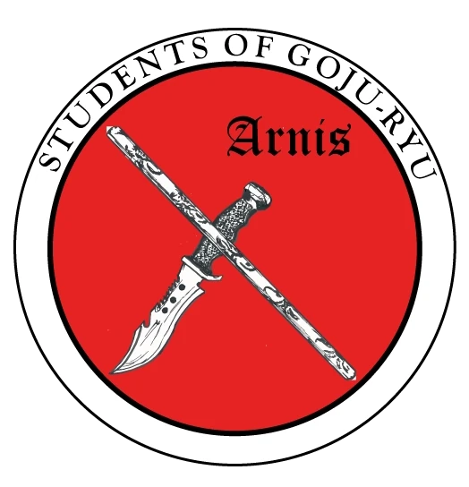
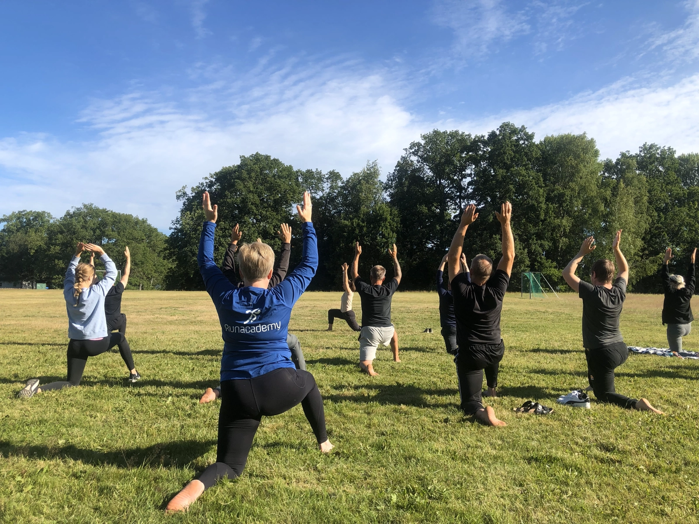

Vilken kampart passar dig?
Kampkonst & Livsfilosofi
Oavsett om du väljer karate eller arnis så är det österländska synsättet, med helheten hos människan i centrum, är det viktiga för oss. Detta återspeglas under hela utbildningen.
Nybörjarträningen är utformad så att du kan komma precis som du är. Inga förkunskaper krävs, vare sig styrka eller vighet. Men du kommer snart att märka hur din fysiska förmåga ökar och hur din förmåga till inlärning blir större.
Karate

Vår stil heter Goju Ryu
Karaten uppstod i det lilla öriket Okinawa för drygt 100 år sedan. Tyngdpunkt på slag och sparkar, men även grepp, kast, markkamp, vapenträning med mera ingår. Goju Ryu betyder hård-mjuk stil och avspeglar flexibiliten i systemet. Karate var ursprungligen ett självförsvarssystem som med tiden kom att utvecklas i flera olika inriktningar, och idag kan du träna karate av många olika anledningar.
- Som en bra fysisk allmänträning där du kan utveckla din kondition, styrka, smidighet, styrka och kroppskontroll
- En personlig utveckling, framför allt för dig som tröttnat på att söka efter vem du är och i stället bestämt dig för att bli den du vill vara
- Som tävlingsverksamhet (något vi tyvärr inte kan erbjuda hos oss)
- Som ett effektivt självförsvar där du, om det värsta skulle inträffa, står väl rustad. (Här lägger vi stort fokus i vår utbildning)
- Kanske vill du bara ha supertrevliga träningskamrater i en positiv och välkomnande miljö
- Om du tycker om att träna något där du inte blir ”för gammal” och där du kan träna i egen takt på dina villkor
- För dig med intresse för österländsk filosofi i praktiken
- För dig som är initiativrik nog att börja för helt egna anledningar
Nybörjarträningen är utformad så att du kan komma precis som du är. Inga förkunskaper krävs, varken styrka eller vighet. Men du kommer snart att märka hur din fysiska förmåga ökar och hur din förmåga till inlärning blir större. För att kunna tillgodogöra sig träningen fullt ut bör man vara minst nio år. Många upplever möjligheten att träna med hela familjen som ett fantastiskt sätt att umgås och utvecklas tillsammans.
Du som vill ha en tuff träning!Tålamod! Vi börjar inte med att ta på oss stora skydd och med full kraft slå mot varandra. Du kommer däremot att mentalt träna din ”tuffhet” från dag ett med koordination och annan inlärning. Träningen blir sakta men säkert mer fysisk och mentalt krävande, men det kommer du inte att märka, utan långsamt växa in i.
Arnis

Även kallat Eskrima eller Kali
Kärt barn har många namn sägs det, och arnis är inget undantag. Man ser även namn som eskrima, kali eller bara som Filipino Martial Art (FMA). I Sverige är detta filippinska system fortfarande rätt ovanligt, men erbjuder en unik nisch bland kampkonsterna. När de mer välkända kamparterna antingen är obeväpnade, eller med vapen som kommer senare i träningen, så börjar vi med vapen från allra första dagen, för att längre fram i träningen gå över på obeväpnad kamp. Med all sannolikhet var detta det sätt som var allrådande förr i tiden. Om längtan efter obeväpnad kamp blir alltför stor så är en kompletterande träning med karaten ett plus. De allra flesta som tränar arnis hos oss tränar karate jämte arnis. Liksom karate så är arnis fantastiskt roligt att träna.
Medan karaten har sitt ursprung i Japan så kommer influenserna i högre grad från närliggande områden i Malajiska arkipelagen där bland annat även Indonesien, Malaysia och Brunei ingår.
De vapen som från start ingår är en 72 cm käpp (kallas olisi), svärd, som till skillnad från exempelvis den japanska katanan, hanteras med endast en hand. Även kniv ingår, och är ett inslag som gjort arnis respekterat över hela världen. Detta genom sin filosofi att om du ska bli duktig på att försvara dig mot en kniv så måste du först lära dig hantera en. Ett specifikt moment kallas espada y daga och för tankarna till medeltida västerländska kampmanualer där man använder svärd i ena handen och kniv i den andra. Nu rekommenderar vi ingen att ge sig i kast med att använda dessa färdigheter i verkligheten, men för dig som tycker att en historisk koppling till äldre sätt att träna är spännande, så ger arnis dig ett helt nytt perspektiv, oavsett om du tränat eller tränar andra kamparter. Genom att inte ha en obeväpnad grund är arnis ett tacksamt komplement till alla andra kamparter.
Genom sin natur så har vi valt att ha en åldersgräns på lägst 15 år för denna typ av träning. Nämnde vi förresten att arnis är fantastiskt roligt att träna!
Yoga

Lördagens bästa pass
Från och med i höst kommer yogan att bli ett helt 1-timmes pass på lördagar.
För dig som brinner för yoga så får du spännande och innehållsrika träningar. Även om ditt mål på sikt är något annat än yoga innebär detta att din kropp blir mjukare, starkare och flexiblare och ett steg på vägen. Många som tränar yoga hos oss deltar även i någon av våra grupper i kampkonst.
Vår huvudinstruktör i yoga heter Esmeralda. Hon anpassar klasserna efter personerna som är där och målet är att varje person ska känna att det går att yoga utifrån sina egna förutsättningar och behov.
- Tiden är lördagar 14:00 - 15:00 och vi tränar i Hammarens IP
- För tillfället kan vi bara erbjuda denna träningsform i Mariefred